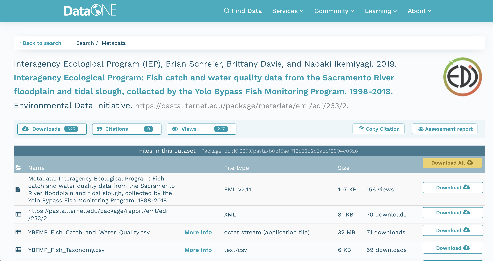
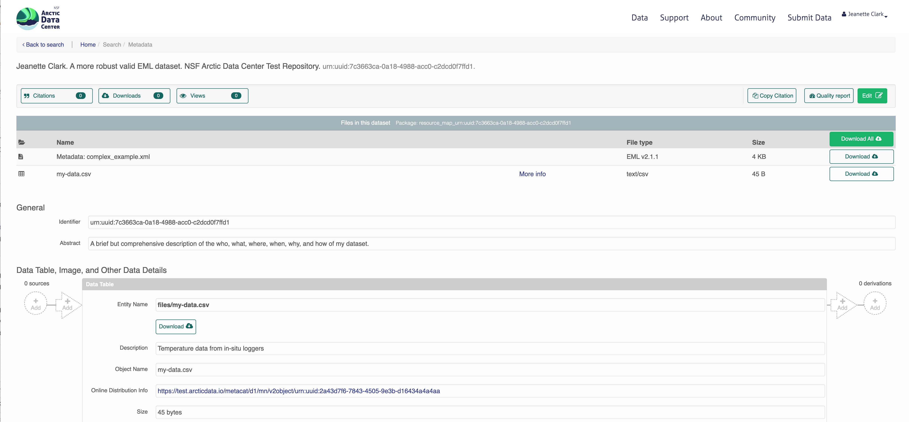

Session 4: Programmatic metadata and data access
Reproducible Data Access
##
## Attaching package: 'contentid'## The following object is masked from 'package:pins':
##
## pinLearning Objectives
In this lesson, you will learn:
- Why we strive for reproducible data access
- How content identifiers differ from DOIs
- How content identifiers make research more reproducible
- Ways to register and resolve content identifiers for unpublished data
- How content identifiers can resolve to published data sources
Barriers to data access
Traditional ways of working with data – as files on a file system – limit the reproducibility of code to local compute environments. A typical R analysis file will load one or many data files from the local disk with code like this:
delta_catch <- readr::read_csv('/Users/jkresearcher/Projects/2018/Delta_Analysis/delta_catch.csv')
delta_taxa <- readr::read_csv('../../Delta_2021/delta_taxa.csv')
delta_effort <- readr::read_csv('delta_effort.csv')
delta_sites <- readr::read_csv('data/delta_sites.csv')Which of those file paths are the most portable? And which will run unmodified on both the original computer that they were written on, and on colleagues’ computers? In reality, none of them, in that they require that a specific data file be present in a specific location for the code to work properly, and these assumptions are rarely met and hard to maintain.
The Web partly solves this problem, because it allows code to access data that is located somewhere on the Internet with a web URI. For example, loading data from a web site can be much more portable than loading the equivalent data from a local computer.
delta_sites_edi <- 'https://portal.edirepository.org/nis/dataviewer?packageid=edi.233.2&entityid=6a82451e84be1fe82c9821f30ffc2d7d'
delta_sites <- readr::read_csv(delta_sites_edi, show_col_types = FALSE)
head(delta_sites)## # A tibble: 6 × 4
## MethodCode StationCode LatitudeLocation LongitudeLocation
## <chr> <chr> <dbl> <dbl>
## 1 BSEIN AL1 38.5 -122.
## 2 BSEIN AL2 38.5 -122.
## 3 BSEIN AL3 38.5 -122.
## 4 BSEIN AL4 38.5 -122.
## 5 BSEIN BL1 38.5 -122.
## 6 BSEIN BL2 38.4 -122.In theory, that code will work from anyone’s computer with an internet connection. But code that downloads data each and every time it is run is not particularly efficient, and will be prohibitive for all but the smallest datasets. A simple solution to this issue is to cache a local copy of the dataset, and only retrieve the original from the web when we don’t have a local copy. In this way, people running code or a script will download the data the first time their code is run, but use a local copy from thence forward. While this can be accomplished with some simple conditional logic in R, the pattern has been simplified using the pins package:
delta_sites_edi <- pins::pin('https://portal.edirepository.org/nis/dataviewer?packageid=edi.233.2&entityid=6a82451e84be1fe82c9821f30ffc2d7d')
delta_sites <- readr::read_csv(delta_sites_edi, show_col_types = FALSE)
head(delta_sites)## # A tibble: 6 × 4
## MethodCode StationCode LatitudeLocation LongitudeLocation
## <chr> <chr> <dbl> <dbl>
## 1 BSEIN AL1 38.5 -122.
## 2 BSEIN AL2 38.5 -122.
## 3 BSEIN AL3 38.5 -122.
## 4 BSEIN AL4 38.5 -122.
## 5 BSEIN BL1 38.5 -122.
## 6 BSEIN BL2 38.4 -122.You’ll note that code takes longer the first time it is run, as the data file is downloaded only the first time. While this works well over the short term, abundant evidence shows that web URIs have short lifespan. Most URIs are defunct within a few years (e.g., see McCown et al. 2005). Only the most carefully curated web sites maintain the viability of their links for longer. And maintaining them for decade-long periods requires a focus on archival principles and dedicated staff to ensure that files and the URLs at which they are published remain accessible. This is precisely the role of archival data repositories like the Arctic Data Center, the KNB Data Repository, and the Environmental Data Initiative (EDI).
Finally, no discussion of data access and persistence would be complete without discussing the use of Digital Object Identifiers (DOIs). DOIs have become the dominant means to create persistent links to academic articles, publications, and datasets. They work by assigning a DOI name to a published work, and then ensuring that the DOI name always redirects to the current web location of the resource. Journals, societies, and data repositories actively maintain the redirection between a DOI such as doi:10.6073/pasta/b0b15aef7f3b52d2c5adc10004c05a6f and its current location on the EDI Repository. DOIs are commonly assigned to published datasets, and include the bibliographic metadata needed to properly cite and access the dataset.
The challenge with DOIs as they are typically implemented is that they are usually assigned to a Dataset, which is a collection of digital objects that are composed to form the whole Dataset and that can be accessed individually or through an API. Typically, the metadata attached to DOIs does not include an enumeration of those digital objects or a clear mechanism to get to the actual data – rather, the DOI redirects to a dataset landing page that provides a human readable summary of the dataset, and often various types of links to find and eventually download the data. Despite advances in metadata interoperability from DCAT and schema.org/Dataset, there is currently no reliable way to universally go from a known DOI for a dataset to the list of current locations of all of the digital objects that compose that dataset. And yet, this is exactly what we need for portable and persistent data access. In conclusion, DOIs are a great approach to uniquely citing a dataset, but they do not provde a way for code to download specific, versioned digital objects from a dataset in a portable way that is persistent over many years.
We want data access to be:
- Portable
- Persistent
- Versioned
- Traceable
- Transparent
- Citable
Persistent and portable data access for improving reproducibility
We’ll be working with the following IEP dataset that is stored on EDI:
Interagency Ecological Program (IEP), B. Schreier, B. Davis, and N. Ikemiyagi. 2019. Interagency Ecological Program: Fish catch and water quality data from the Sacramento River floodplain and tidal slough, collected by the Yolo Bypass Fish Monitoring Program, 1998-2018. ver 2. Environmental Data Initiative. https://doi.org/10.6073/pasta/b0b15aef7f3b52d2c5adc10004c05a6f (Accessed 2021-10-30).
You can view this IEP dataset on DataONE:
 It also is visible from the EDI dataset landing page:

It contains several data files, each of which is at a specific web URI, including:
- Fish catch and water quality
- Fish taxonomy
- Trap Effort
- Site locations
delta_catch_edi <- 'https://portal.edirepository.org/nis/dataviewer?packageid=edi.233.2&entityid=015e494911cf35c90089ced5a3127334'
delta_taxa_edi <- 'https://portal.edirepository.org/nis/dataviewer?packageid=edi.233.2&entityid=0532048e856d4bd07deea11583b893dd'
delta_effort_edi <- 'https://portal.edirepository.org/nis/dataviewer?packageid=edi.233.2&entityid=ace1ef25f940866865d24109b7250955'
delta_sites_edi <- 'https://portal.edirepository.org/nis/dataviewer?packageid=edi.233.2&entityid=6a82451e84be1fe82c9821f30ffc2d7d'Registering a content identifier from a URI
Use the contentid package for portable access to data.
delta_catch_id <- store(delta_catch_url)
delta_taxa_id <- store(delta_taxa_url)
delta_effort_id <- store(delta_effort_url)
delta_sites_id <- store(delta_sites_url)
print(c(delta_catch_id=delta_catch_id,
delta_taxa_id=delta_taxa_id,
delta_effort_id=delta_effort_id,
delta_sites_id=delta_sites_id))## delta_catch_id
## "hash://sha256/e0dc10d7f36cfc5ac147956abb91f24f2b2df9f914a004bbf1e85e7d9cf52f41"
## delta_taxa_id
## "hash://sha256/1473de800f3c5577da077507fb006be816a9194ddd417b1b98836be92eaea49d"
## delta_effort_id
## "hash://sha256/f2433efab802f55fa28c4aab628f3d529f4fdaf530bbc5c3a67ab92b5e8f71b2"
## delta_sites_id
## "hash://sha256/e25498ffc0208c3ae0e31a23204b856a9309f32ced2c87c8abcdd6f5cef55a9b"Loading data from a content identifier
delta_taxa_file <- contentid::resolve(delta_taxa_id, store = TRUE)
delta_taxa <- readr::read_csv(delta_taxa_file, show_col_types=FALSE)
delta_catch_file <- contentid::resolve(delta_catch_id, store = TRUE)
delta_catch <- readr::read_csv(delta_catch_file, show_col_types=FALSE)## Warning: One or more parsing issues, see `problems()` for detailshead(delta_catch)## # A tibble: 6 × 32
## SampleDate SampleTime StationCode MethodCode GearID CommonName
## <chr> <time> <chr> <chr> <chr> <chr>
## 1 1/16/1998 14:05 YB BSEIN SEIN50 Threadfin Shad
## 2 1/16/1998 15:00 YB BSEIN SEIN50 Inland Silverside
## 3 1/19/1998 12:17 YB FNET FKNT Threadfin Shad
## 4 1/19/1998 12:17 YB FNET FKNT Chinook Salmon
## 5 1/19/1998 11:00 YB PSEIN PSEIN100 Threadfin Shad
## 6 1/19/1998 11:30 YB PSEIN PSEIN100 Inland Silverside
## # … with 26 more variables: GeneticallyConfirmed <chr>, GeneticID <lgl>,
## # Field_ID_CommonName <chr>, ForkLength <dbl>, Count <dbl>, FishSex <chr>,
## # Race <chr>, MarkCode <chr>, CWTSample <lgl>, FishTagID <chr>,
## # StageCode <chr>, Dead <chr>, GearConditionCode <dbl>, WeatherCode <chr>,
## # WaterTemperature <dbl>, Secchi <dbl>, Conductivity <dbl>, SpCnd <dbl>,
## # DO <dbl>, pH <dbl>, Turbidity <dbl>, SubstrateCode <chr>, Tide <chr>,
## # VolumeSeined <dbl>, Latitude <dbl>, Longitude <dbl>delta_sites_file <- contentid::resolve(delta_sites_id, store = TRUE)
delta_sites <- readr::read_csv(delta_sites_file, show_col_types = FALSE)This approach is portable, as anyone can run it without having the data local beforehand. This approach is persistent, because it pulls data from persistent archives, and can take advantage of archive redundancy. For example, here is the list of locations that can be currently used to retrieve this data file:
#contentid::query_sources(delta_catch_id, cols=c("identifier", "source", "date", "status", "sha1", "sha256"), registries = content_dir())
contentid::query_sources(delta_catch_id, cols=c("identifier", "source", "date", "status", "sha1", "sha256"))## identifier
## 1 hash://sha256/e0dc10d7f36cfc5ac147956abb91f24f2b2df9f914a004bbf1e85e7d9cf52f41
## 2 hash://sha256/e0dc10d7f36cfc5ac147956abb91f24f2b2df9f914a004bbf1e85e7d9cf52f41
## source
## 1 /Users/runner/Library/Application Support/org.R-project.R/R/contentid/sha256/e0/dc/e0dc10d7f36cfc5ac147956abb91f24f2b2df9f914a004bbf1e85e7d9cf52f41
## 2 https://gmn.edirepository.org/mn/v2/object/https%3A%2F%2Fpasta.lternet.edu%2Fpackage%2Fdata%2Feml%2Fedi%2F233%2F2%2F015e494911cf35c90089ced5a3127334
## date status sha1
## 1 2021-11-01 03:33:46 200 <NA>
## 2 2020-04-12 23:05:21 200 sha1-MX1/hA5Zj1875zKrDgTwCoBRxtA=
## sha256
## 1 hash://sha256/e0dc10d7f36cfc5ac147956abb91f24f2b2df9f914a004bbf1e85e7d9cf52f41
## 2 sha256-4NwQ1/Ns/FrBR5Vqu5HyTyst+fkUoAS78ehefZz1L0E=# BUG TO FILE: `query_sources` should not return an error on inaccessible repos -- it should skip them and produce a warning, so that the local repo will still work when disconnected from the internetThis approach is reproducible, as the exact version will be used every time (even if someone changes the data at the original web URI).
This approach is traceable because there is a reference in the code to the specific data used, and the only way to change which data are used is to change the checksum thst is being referenced to a new version.
Publishing local data identifiers
# Store a local file
vostok_co2 <- system.file("extdata", "vostok.icecore.co2", package = "contentid")
id <- store(vostok_co2)
vostok <- retrieve(id)
co2 <- read.table(vostok, col.names = c("depth", "age_ice", "age_air", "co2"), skip = 21)
head(co2)## depth age_ice age_air co2
## 1 149.1 5679 2342 284.7
## 2 173.1 6828 3634 272.8
## 3 177.4 7043 3833 268.1
## 4 228.6 9523 6220 262.2
## 5 250.3 10579 7327 254.6
## 6 266.0 11334 8113 259.6Improvements to content identifiers
Content identifiers are not well-linked to DOIs
- DOIs are the current standard for citing data, and carry the citation metadata for data packages (such as author, title, publication year, etc.)
Content identifiers are opaque, and not particularly transparent
- Need mechanisms to transparently know what a contentid refers to
- Luckily, we have everything we need to look up that info in DataONE and similar systems
We can even retrieve the data citation for a content identifier
Final example, showing use of contentid with metadata and a citation
Programming Metadata and Data Publishing
Learning Objectives
In this lesson, you will learn:
- How to write standardized metadata in R
- How to publish data packages to the Arctic Data Center programmatically
For datasets with a relatively small number of files that do not have many columns, the Arctic Data Center web form is the most efficient way to create metadata. However, for datasets that have many hundreds of files with a similar structure, or a large number of attributes, programmatic metadata creation may be more efficient. Creating metadata and publishing programmatically also allows for more a streamlined approach to updating datasets that have been published. By incorporating this documentation and publishing approach into your scientific workflow, you can improve the reproducibility and transparency of your work.
Creating Metadata
About Ecological Metadata Language (EML)
EML, the metadata standard that the Arctic Data Center uses, looks like this:
<?xml version="1.0" encoding="UTF-8"?>
<eml:eml packageId="df35d.442.6" system="knb"
xmlns:eml="eml://ecoinformatics.org/eml-2.1.1">
<dataset>
<title>Improving Preseason Forecasts of Sockeye Salmon Runs through
Salmon Smolt Monitoring in Kenai River, Alaska: 2005 - 2007</title>
<creator id="1385594069457">
<individualName>
<givenName>Mark</givenName>
<surName>Willette</surName>
</individualName>
<organizationName>Alaska Department of Fish and Game</organizationName>
<positionName>Fishery Biologist</positionName>
<address>
<city>Soldotna</city>
<administrativeArea>Alaska</administrativeArea>
<country>USA</country>
</address>
<phone phonetype="voice">(907)260-2911</phone>
<electronicMailAddress>mark.willette@alaska.gov</electronicMailAddress>
</creator>
...
</dataset>
</eml:eml>Earlier in this course we learned how to create an EML document like this using the Arctic Data Center web form. Now, we will learn how to create it using R. This can be especially useful to decrease the repetitiveness of metadata creation when you have many files with the same format, files with many attributes, or many data packages with a similar format.
When you create metadata using the web form, the form creates valid metadata for you. Valid, structured metadata is what enables computers to predictably parse the information in a metadata document, enabling search, display, and even meta-analysis. When we create metadata in R, there aren’t as many user-friendly checks in place to ensure we create valid EML, so we need to understand the structure of the document more completely in order to make sure that it will be compatible with the Arctic Data Center.
Let’s look at a simplified version of the example above:
<?xml version="1.0" encoding="UTF-8"?>
<eml:eml packageId="df35d.442.6" system="knb"
xmlns:eml="eml://ecoinformatics.org/eml-2.1.1">
<dataset>
<title>Improving Preseason Forecasts of Sockeye Salmon Runs through
Salmon Smolt Monitoring in Kenai River, Alaska: 2005 - 2007</title>
<creator id="1385594069457">
<individualName>
<givenName>Mark</givenName>
<surName>Willette</surName>
</individualName>
</creator>
...
</dataset>
</eml:eml>EML is written in XML (eXtensisble Markup Language). One of the key concepts in XML is the element. An XML element is everything that is encompassed by a start tag (<...>) and an end tag (</...>). So, a simple element in the example above is <surName>Willette</surName>. The name of this element is surName and the value is simple text, “Willette”. Each element in EML has a specific (case sensitive!) name and description that is specified in the schema. The description of the surName element is: “The surname field is used for the last name of the individual associated with the resource. This is typically the family name of an individual…” The EML schema specifies not only the names and descriptions of all EML elements, but also certain requirements, like which elements must be included, what type of values are allowed within elements, and how the elements are organized. An EML document is valid when it adheres to all of the requirements speficied in the EML schema.
You’ll notice that some elements, rather than having a simple value, instead contain other elements that are nested within them. Let’s look at individualName.
<individualName>
<givenName>Mark</givenName>
<surName>Willette</surName>
</individualName>This element is a collection of other elements (sometimes referred to as child elements). In this example, the individualName element has a givenName and a surName child element. We can check the requirements of any particular element by looking at the schema documents, which includes some helpful diagrams.
The diagram in the individualName section of the schema looks like this:

This shows that within individualName there are 3 possible child elements: salutation, givenName, and surName. The yellow circle icon with stacked papers tells you that the elements come in series, so you can include one or more of the child elements (as opposed to a switch symbol, which means that you choose one element from a list of options). The bold line tells you that surName is required, and the 0..inf indicates that you can include 0 or more salultation or givenName elements.
So, to summarize, EML is the metadata standard used by the Arctic Data Center. It is written in XML, which consists of a series of nested elements. The element definitions, required elements, and structure are all defined by a schema. When you write EML, in order for it to be valid, your EML document must conform to the requirements given in the schema.
Metadata in R: a simple example
Now, let’s learn how the EML package can help us create EML in R.
First, load the EML package in R.
library(EML)The EML package relies on named list structures to generate name-value pairs for elements. “Named list structures” may sound unfamiliar, but they aren’t dissimilar from data.frames. A data.frame is just a named list of vectors of the same length, where the name of the vector is the column name. In this section, we will use the familiar $ operator to dig down into the named list structure that we generate.
To show how this works, let’s create the individualName element, and save it as an object called me. Remember the schema requirements - indvidualName has child elements salutation, givenName, and surName. At least surName is required.
me <- list(givenName = "Jeanette",
surName = "Clark")
meSo we have created the contents of an individualName element, with child elements givenName and surName, and assigned the values of those child elements to my name.
This might look confusing, hard to remember, and if you aren’t intimitely familiar with the EML schema, you are probably feeling a little intimidated. Luckily the EML package has a set of helper list constructor functions which tell you what child elements can be used in a parent element. The helper functions have the format eml$elementName(). When combined with the RStudio autocomplete functionality, the whole process gets a lot easier!
me <- eml$individualName(givenName = "Jeanette",
surName = "Clark")We can then use this object me, which represents the individualName element, and insert it into a larger EML document.
At the top level of a complete EML document are the packageId and system elements. This is how your document can be uniquely identified within whatever system manages it. The packageId element typically contains the DOI (Digital Object Identifier) or other identifier for the dataset. Nested within the top level is the dataset element. All EML documents must have, at a minimum, a title, creator, and contact, in addition to the packageId and system.
Let’s create a minimal valid EML dataset, with an arbitrary packageId and system.
doc <- list(packageId = "dataset-1", system = "local",
dataset = eml$dataset(title = "A minimial valid EML dataset",
creator = eml$creator(individualName = me),
contact = eml$contact(individualName = me)))Unlike the web editor, in R there is nothing stopping you from inserting arbitrary elements into your EML document. A critical step to creating EML is validating your EML document to make sure it conforms to the schema requirements. In R this can be done using the eml_validate function.
eml_validate(doc)We can write our EML using write_eml.
write_eml(doc, "../files/simple_example.xml")Here is what the written file looks like:
<?xml version="1.0" encoding="UTF-8"?>
<eml:eml xmlns:eml="eml://ecoinformatics.org/eml-2.1.1" xmlns:xsi="http://www.w3.org/2001/XMLSchema-instance" xmlns:stmml="http://www.xml-cml.org/schema/stmml-1.1" packageId="id" system="system" xsi:schemaLocation="eml://ecoinformatics.org/eml-2.1.1/ eml.xsd">
<dataset>
<title>A minimal valid EML dataset</title>
<creator>
<individualName>
<givenName>Jeanette</givenName>
<surName>Clark</surName>
</individualName>
</creator>
<contact>
<individualName>
<givenName>Jeanette</givenName>
<surName>Clark</surName>
</individualName>
</contact>
</dataset>
</eml:eml>Validation Errors
One of the hardest parts about creating EML in R is diagnosing validation errors. I won’t get into too much detail, but here is a simple example. The eml$... family of helpers can help prevent validation errors, since they have a set list of arguments which are allowed. Here, I bypass the eml$dataset() helper function to show what the error looks like.
doc <- list(packageId = "dataset-1", system = "local",
dataset = list(title = "A minimial valid EML dataset",
creator = eml$creator(individualName = me),
contact = eml$contact(individualName = me),
arbitrary = "This element isn't in the schema"))
eml_validate(doc)This error essentially says that the element arbitrary is not expected, and gives you a hint of some elements that were expected. Validation errors can be tricky, especially when there are lots of them. Validate early and often!
Metadata in R: A more complete example
As you might imagine, creating a complete metadata record like what is shown on this page would be pretty tedious if we did it just using the generic list or eml$... helpers, since the nesting structure can be very deep.
The EML package has a set of higher level helper functions beginning with set_ that create some of the more complex elements.
To demonstrate the use of these we are going to create an EML document that contains the following information:
- title
- creator and contact
- abstract
- methods
- geographic and temporal coverage
- description of a tabular data file and a script
We will edit these elements using a mix of helpers and generic techniques.
To get set up, navigate to this dataset and download the CSV file and the R script. Put them in a directory called files that is a sub-directory of the location of this RMarkdown file.
Title, creator, contact
To start, lets create a basic EML skeleton using our example above, but with more information in the creator and contact information besides just my name.
# eml creator and contact have identical schema requirements (both fall under `responsibleParty`)
me <- eml$creator(individualName = eml$individualName(givenName = "Jeanette",
surName = "Clark"),
organizationName = "National Center for Ecological Analysis and Synthesis",
electronicMailAddress = "jclark@nceas.ucsb.edu",
userId = list(directory = "https://orcid.org",
userId = "https://orcid.org/0000-0003-4703-1974"))
doc <- list(packageId = "dataset-1", system = "local",
dataset = eml$dataset(title = "A more robust valid EML dataset",
creator = me,
contact = me))Because we have used the eml$dataset helper, all of the possible sub-elements have been populated in our EML document, allowing us to easily access and edit them using R autocomplete.
Abstract
We can use this to dive down into sub-elements and edit them. Let’s do the abstract. This is a simple element so we can just assign the value of the abstract to a character string.
doc$dataset$abstract <- "A brief but comprehensive description of the who, what, where, when, why, and how of my dataset."Methods
We can use the set_methods function to parse a markdown (or word) document and insert it into the methods section. This way of adding text is especially nice because it preserves formatting.
doc$dataset$methods <- set_methods("../files/methods.md")
doc$dataset$methodsCoverage
The geographic and temporal coverage can be set using set_coverage.
doc$dataset$coverage <- set_coverage(beginDate = 2001,
endDate = 2010,
geographicDescription = "Alaska, United States",
westBoundingCoordinate = -179.9,
eastBoundingCoordinate = -120,
northBoundingCoordinate = 75,
southBoundingCoordinate = 55)Data file: script
Information about data files (or entity level information) can be added in child elements of the dataset element. Here we will use the element otherEntity (other options include spatialVector, spatialRaster, and dataTable) to represent the R script.
First, some high level information.
doc$dataset$otherEntity <- eml$otherEntity(entityName = "../files/datfiles_processing.R",
entityDescription = "Data processing script",
entityType = "application/R")We can use the set_physical helper to set more specific information about the file, like its size, delimiter, and checksum. This function automatically detects fundamental characteristics about the file if you give it a path to your file on your system.
doc$dataset$otherEntity$physical <- set_physical("../files/datfiles_processing.R")Data file: tabular
Here we will use the element dataTable to describe the tabular data file.
As before, we set the entityName, entityDescription, and the physical sections.
doc$dataset$dataTable <- eml$dataTable(entityName = "../files/my-data.csv",
entityDescription = "Temperature data from in-situ loggers")
doc$dataset$dataTable$physical <- set_physical("../files/my-data.csv")Next, perhaps the most important part of metadata, but frequently the most difficult to document in a metadata standard: attribute level information. An attribute is a variable in your dataset. For tabular data, this is information about columns within data tables, critical to understanding what kind of information is actually in the table!
The set_attributes function will take a data.frame that gives required attribute information. This data.frame contains rows corresponding to column names (or attributes) in the dataset, and columns:
- attributeName (any text)
- attributeDefinition (any text)
- unit (required for numeric data, use
get_unitList()to see a list of standard units) - numberType (required for numeric data, one of: real, natural, whole, integer)
- formatString (required for dateTime data)
- definition (required for textDomain data)
Two other sub-elements, the domain and measurementScale, can be inferred from the col_classes argument to set_attributes.
Let’s create our attributes data.frame.
atts <- data.frame(attributeName = c("time", "temperature", "site"),
attributeDefinition = c("time of measurement", "measured temperature in degrees Celsius", "site identifier"),
unit = c(NA, "celsius", NA),
numberType = c(NA, "real", NA),
formatString = c("HH:MM:SS", NA, NA),
definition = c(NA, NA, "site identifier"))We will then use this in our set_attributes function, along with the col_classes argument, to generate a complete attributeList.
doc$dataset$dataTable$attributeList <- set_attributes(attributes = atts,
col_classes = c("Date", "numeric", "character"))As you might imagine, this can get VERY tedious with wide data tables. The function shiny_attributes calls an interactive table that can not only automatically detect and attempt to fill in attribute information from a data.frame, but also helps with on the fly validation.
Note: this requires that the shinyjs package is installed.
atts_shiny <- shiny_attributes(data = read.csv("../files/my-data.csv"))This produces a data.frame that you can insert into set_attributes as above.
Validating and writing the file
Finally, we need to validate and write our file.
eml_validate(doc)write_eml(doc, "../files/complex_example.xml")Publish data to the Arctic Data Center test site
Setup and Introduction
Now let’s see how to use the dataone and datapack R packages to upload data to DataONE member repositories like the KNB Data Repository and the Arctic Data Center.
The dataone package
The dataone R package provides methods to enable R scripts to interact with DataONE to search for, download, upload and update data and metadata. The purpose of uploading data from R is to automate the repetitive tasks for large datasets with many files. For small datasets, the web submission form will certainly be simpler.
The dataone package interacts with two major parts of the DataONE infrastructure: Coordinating Nodes (or cn) and Member Nodes (or mn). Coordinating nodes maintain a complete catalog of all data and provide the core DataONE services, including search and discovery. The cn that is exposed through search.dataone.org is called the production (or PROD) cn. Member Nodes expose their data and metadata through a common set of interfaces and services. The Arctic Data Center is an mn. To post data to the Arctic Data Center, we need to interact with both the coordinating and member nodes.
In addition to the production cn, there are also several test coordinating node environments, and corresponding test member node environments. In this tutorial, we will be posting data to the test Arctic Data Center environment.
The datapack package
The datapack R package represents the set of files in a dataset as a datapack::DataPackage. This DataPackage is just a special R object class that is specified in the datapack package. Each object in that DataPackage is represented as a DataObject, another R object class specified by datapack.
When you are publishing your dataset, ideally you aren’t only publishing a set of observations. There are many other artifacts of your research, such as scripts, derived data files, and derived figures, that should be archived in a data package. Each of the types of files shown in the workflow below should be considered a data object in your package, including the metadata file that describes the individual components of your workflow.

Each of the files in the diagram above has a relationship with the other files, and using datapack you can describe these relationships explicitly and unambiguously using controlled vocabularies and conceptual frameworks. For example, we know that the fine “Image 1” was generated by “Mapping Script.” We also know that both “Image 1” and “Mapping Script” are described by the file “Metadata.” Both of these relationsips are represented in datapack using speficic ontologies. Using datapack we will create a DataPackage that represents a (very simple) scientific workflow and the data objects within it, where the relationships between those objects are explicitly described. Then, we will upload this DataPackage to a test version of the Arctic Data Center repository using dataone.
Before uploading any data to a DataONE repository, you must login to get an authentication token, which is a character string used to identify yourself. This token can be retrieved by logging into the test repository and copying the token into your R session.
Obtain an ORCID
ORCID is a researcher identifier that provides a common way to link your researcher identity to your articles and data. An ORCID is to a researcher as a DOI is to a research article. To obtain an ORCID, register at https://orcid.org.
Log in to the test repository and copy your token
We will be using a test server, so login and retrieve your token at https://test.arcticdata.io.
Once you are logged in, navigate to your Profile Settings, and locate the “Authentication Token” section, and then copy the token for R to your clipboard.

Finally, paste the token into the R Console to register it as an option for this R session. You are now logged in. But note that you need to keep this token private; don’t paste it into scripts or check it into git, as it is just as sensitive as your password.
Uploading A Package Using R with uploadDataPackage
Datasets and metadata can be uploaded individually or as a collection. Such a collection, whether contained in local R objects or existing on a DataONE repository, will be informally referred to as a package.
Load the libraries:
library(dataone)
library(datapack)First we need to create an R object that describes what coordinating and member nodes we will be uploading our dataset to. We do this with the dataone function D1Client (DataONE client). The first argument specifies the DataONE coordinating node (in this case a test node called STAGING) and the second specifices the member node.
We’ll also create an object that only represents the member node, which is helpful for some functions.
d1c <- D1Client("STAGING", "urn:node:mnTestARCTIC")
mn <- d1c@mnNext, we create a DataPackage as a container for our data, metadata, and scripts using the new function. This just creates an empty object with the class DataPackage
dp <- new("DataPackage")
dpWe then need to add a metadata file and data file to this package. First we generate some identifiers for the objects. We’ll use the uuid scheme for all of our objects. If we were uploading to production, you would likely want use an identifier with the doi scheme for your metadata document.
data_id <- generateIdentifier(mn, scheme = "uuid")
script_id <- generateIdentifier(mn, scheme = "uuid")
metadata_id <- generateIdentifier(mn, scheme = "uuid")Now we need to modify our EML document to include these identifiers. This increases the accessibility of the files in our dataset.
First read in the EML that we created earlier.
doc <- read_eml("files/complex_example.xml")Let’s replace the arbitrary packageId and system that we set in the example above to reflect the identifier we created for this package, and the system we are uploading the package to.
doc$packageId <- metadata_id
doc$system <- mn@identifierNow let’s add a distribution URL to the physical section of our entity information. All of the distribution URLs look something like this https://test.arcticdata.io/metacat/d1/mn/v2/object/urn:uuid:A0cc95b46-a318-4dd1-8f8a-0e6c280e1d95, where https://test.arcticdata.io/metacat/d1/mn/v2/ is the member node end point, and urn:uuid:A0cc95b46-a318-4dd1-8f8a-0e6c280e1d95 is the identifier of the object.
We can easily construct this URL using the paste0 function, and insert it into the physical section of the dataTable element.
# set url for csv
doc$dataset$dataTable$physical$distribution$online$url <- paste0(mn@endpoint,
"object/",
data_id)
# set url for script
doc$dataset$otherEntity$physical$distribution$online$url <- paste0(mn@endpoint,
"object/",
script_id)
write_eml(doc, "files/complex_example.xml")Now we have a full metadata document ready to be uploaded. We now need to add our files to the DataPackage.
First, let’s create a new DataObject, which is another object class specific to datapack. Our metadata file, data file, and script will all need to be added as a DataObject. Remember that all files in a package are considered data objects, not just the ones that we you traditionally think of as being “data”.
The format argument specifies the type of file, and should match one of the list of DataONE formatIds (listed in the Id field) here.
# Add the metadata document to the package
metadataObj <- new("DataObject",
id = metadata_id,
format ="eml://ecoinformatics.org/eml-2.1.1",
filename = "files/complex_example.xml")After creating the DataObject that represents the metadata file, we add it to the data package using addMember.
dp <- addMember(dp, metadataObj)
dpWe add the data file and the script similarly. The only difference is in the addMember function we have to set the mo (metadata object) argument equal to the DataObject that represents the metadata file. Adding our csv file to the package this way not only adds the file to the data package, but it also specifies that the csv is described by the metadata.
# Add our data file to the package
sourceObj <- new("DataObject",
id = data_id,
format = "text/csv",
filename = "files/my-data.csv")
dp <- addMember(dp, sourceObj, mo = metadataObj)
dpNext we add our script in the same way.
# Add our script to the package
scriptObj <- new("DataObject",
id = script_id,
format = "application/R",
filename = "files/datfiles_processing.R")
dp <- addMember(dp, scriptObj, mo = metadataObj)
dpYou can also specify other information about the relationships between files in your data package by adding provenance information. Here, we specify that the R script (program) uses the csv (sources) by including them as the specified arguments in the describeWorkflow function.
dp <- describeWorkflow(dp, sources = sourceObj, program = scriptObj)
dpEach object in a data package has an access policy. There are three levels of access you can grant either to individual files, or the package as a whole.
- read: the ability to view when published
- write: the ablity to edit after publishing
- changePermission: the ability to grant other people read, write, or changePermission access
Here, I give my colleague (via his ORCID) “read” and “write” permission to my entire data package using addAccessRule.
dp <- addAccessRule(dp,
subject = "http://orcid.org/0000-0003-0077-4738",
permission = c("read","write"),
getIdentifiers(dp))Finally, we upload the package to the test server for the Arctic Data Center using uploadDataPackage. This function takes as arguments d1c (the DataONE client which specifies which coordinating and member nodes to use), dp (the data package itself), whether you want the package to include public read access (public = TRUE).
packageId <- uploadDataPackage(d1c, dp, public = TRUE)You can now search for and view the package at https://test.arcticdata.io:
